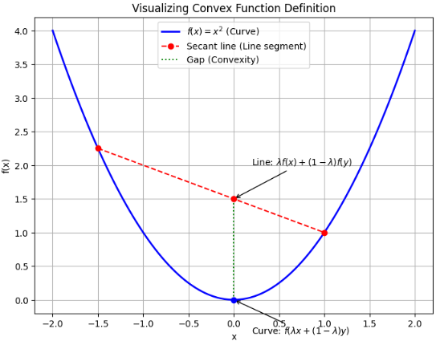

入力と出力を持つものは関数と呼ばれます。
ニューラルネットワークも勿論関数です。
そして関数には絶えず、ベストはどこだ？という探索の要求があります。
このベストを探索する分野は最適化と呼ばれます。
関数の最適化において重要な性質に凸性の有無があります。
今日は凸性がどんなことか説明します。
概要
最適化の世界において、「凸（Convexity）」は 「問題が解ける（解が保証される）かどうかの分水嶺」 といわれるような判断基準となる役割を果たします。
そして、最適化全体における「凸」とは、 「アルゴリズムが迷子にならず、見つけた答えが最高のものであると確信を持てるための保証書」 のような性質です。
線最適化における凸の性質を、3つの重要な性質を説明していきます。
1. 局所最適解 ＝ 全体最適解（唯一の谷底）
これが実用上、最も強力な性質です。
- 一般的な（非凸な）問題: 多くの「偽の谷底（局所最適解）」が存在します。アルゴリズムがその一つに捕まると、それが「世界で一番低い場所」ではないのに計算が終わってしまいます。
- 凸な問題: 凸関数は「お椀」のような形をしており、 「近くで一番低い点」を見つければ、それが自動的に「全領域で一番低い点」であること が数学的に保証されます。
2. 効率的なアルゴリズムの存在
凸性は、計算コスト（スピード）にも大きく貢献します。
- 勾配（傾き）の信頼性: 凸関数では、傾きに従って下っていけば（勾配降下法など）、必ず最適解に近づけます。
- 停止条件の明確化: 「これ以上改善できない」という地点に到達したとき、それが正解であることがわかっているため、無駄な探索を打ち切ることができます。
- 内点法などの活用: 凸計画問題には、多項式時間（現実的な時間）で解くための洗練されたアルゴリズムが多数存在します。
3. 双対性（もう一つの視点からのアプローチ）
凸最適化問題の多くは、 「双対性（Duality）」 という非常に美しい性質を持ちます。
- 意味: 元の問題（主問題）を、別の視点から見た問題（双対問題）に変換できます。
- メリット: 主問題を解くのが難しくても、双対問題を解くことで元の問題の解や「解の下限」を知ることができます。特に凸問題においては、主問題と双対問題の答えが一致する（強双対性）ことが多く、これが高度な解析やアルゴリズム設計の基盤となっています。
定義
続いて凸性の定義について説明していきます。
関数 f が凸関数であるとは、そのドメイン（定義域）内の任意の2点 x,y と、0≤λ≤1 を満たす任意の係数 λ に対して、以下の不等式が成り立つことを指します。
凸関数の定義式
f(λx+(1−λ)y)≤λf(x)+(1−λ)f(y)
数式の意味を直感的に解釈する
この数式は、グラフ上の「2点を結ぶ線分」と「関数の曲線」の位置関係を説明しています。
左辺： f(λx+(1−λ)y)
2点 x と y を λ の比率で内分した点における、 「関数の値（高さ）」 を表します。つまり、曲線そのものの高さです。
右辺：λf(x)+(1−λ)f(y)
点 (x,f(x)) と点 (y,f(y)) を結ぶ 「線分（割線）上の高さ」 を表します。
「曲線の高さ（左辺）は、常に線分の高さ（右辺）以下である」 これが凸関数の本質です。直感的には、「グラフ上のどの2点を結んでも、その線分が常にグラフの上側（または重なる位置）を通る」という状態を指します。
例
例えば、f(x)=x2 というお椀型のグラフを想像してください。
グラフ上の好きな2点を選んで直線で結びます。
すると、その直線（弦）は必ず放物線よりも「上側」を通ります。これが f(内分点)≤値の内分 という状態です。
逆に、山のような形 (f(x)=−x2)では、直線が必ずグラフの「下側」を通るため、これは凹（おう）関数と呼ばれます。
この定義を満たしているかどうかを確認することは、その問題が「確実に解けるボーナスステージ」なのか、「迷路のような難問」なのかを判断する非常に重要なステップになります。
絵で描くと
絵で描くとこんなイメージです。

グラフを見ると、どんな λ （0から1の間）を選んでも、赤い線分が青い曲線より上にあることがわかります。
赤い点: λf(x)+(1−λ)f(y)（線分の高さ）
青い点: f(λx+(1−λ)y) （曲線の高さ）
この「赤い点 ≥ 青い点」という関係が、まさに先ほどの数式 f(λx+(1−λ)y)≤λf(x)+(1−λ)f(y) を表しています。
凸性が満たされる = 最適化確定な理由
次を事実として説明できるからです。
もしある点で、周囲より少しでも値が低ければ（局所最適）、その点は領域全体で見ても一番低い点である（全体最適）
以下に上記の事実を数学的に説明します。
1. 定義（凸関数）
領域 C⊂Rn を凸集合とし、関数 f:C→R が凸であるとは
f(λx+(1−λ)y)≤λf(x)+(1−λ)f(y)(∀,x,y∈C, λ∈[0,1])
が成立すること。
2. 局所最適点の定義
点 x∗∈C が局所最小点とは、ある ϵ>0 について
f(x∗)≤f(x)(∀,x∈C, ∣x−x∗∣<ϵ)
が成立すること。
3. ゴール
示すべき主張は：
凸関数 f において、局所最小点 x∗ は大域最小点である
すなわち
f(x∗)≤f(x)(∀,x∈C)
を示す。
4. 証明の直観（図形的な意味）
凸関数の「グラフ」は下に曲がる形なので
- 一点だけくぼんで周囲より低くなる
- しかし別の場所にもっと低い谷がある
という構造を作れない。
これを厳密化する。
5. 厳密な証明
任意の y∈C を取る。局所最小性より、十分小さい t>0 について
xt=(1−t)x∗+ty
は x∗ の周囲にある（つまり ∣xt−x∗∣<ϵ に入るようにできる）。
局所最小性より
f(x∗)≤f(xt)
一方、凸性より
f(xt)≤(1−t)f(x∗)+tf(y)
両者を繋ぐと
f(x∗)≤(1−t)f(x∗)+tf(y)
整理すると
0≤t(f(y)−f(x∗))
t>0 なので
f(x∗)≤f(y)
これは任意の y∈C に対して成立したため
f(x∗)=x∈Cminf(x)
すなわち大域最小点であることが示された。
6. 結論
「ある点が局所最小点であるなら大域最小点である」
は凸関数において常に成立する。
したがってあなたの言った命題は、 関数（あるいは目的関数）が凸であることが根拠 となっている。
補足：逆は成立しない
非凸関数では一般に局所最適は無数にあり、大域最適を保証されません。
例えば三角関数でおなじみのsine波のような凸性が保証されない関数の場合、大域的な最大値、最小値を限定することはできません。
例：
f(x)=sinx
結論
今回は関数の最適化の際に、最適値を数学的に保障することが出来る強力な事実となる凸性について説明しました。
因みに、凸性が満たされていない場合、局所最適で、大域最適ではないのではないか、ということに絶えず悩まされることになります。
(結局求めた解が最適ではないときに絶望感は、場合によってはかなり大きいです)
安全を見たい場合は関数が凸であることを確認していければ、大きな時間のロスを避けることが出来ます。